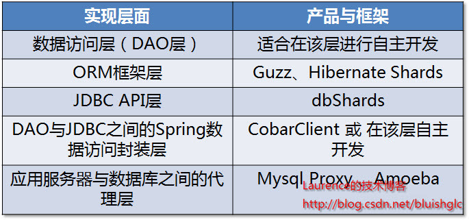

数据库分库分表(sharding)系列(三) 关于使用框架还是自主开发以及sharding实现层面的考量
当团队对系统业务和数据库进行了细致的梳理，确定了切分方案后，接下来的问题就是如何去实现切分方案了，目前在sharding方面有不少的 开源 框架和产品可供参考，同时很多团队也会选择自主开发实现，而不管是选择框架还是自主开发，都会面临一个在哪一层上实现sharding逻辑的问题，本文会对这一系列的问题逐一进行分析和考量。本文原文连接: https://laurence.enlightgram.com/database/sharding-series-3-framework-vs-custom/ 转载请注明出处！
一、sharding逻辑的实现层面
从一个系统的程序架构层面来看，sharding逻辑可以在DAO层、JDBC API层、介于DAO与JDBC之间的Spring数据访问封装层(各种spring的template)以及介于应用服务器与数据库之间的sharding代理服务器四个层面上实现。

图1. Sharding实现层面与相关框架/产品
- 在DAO层实现
当团队决定自行实现sharding的时候，DAO层可能是嵌入sharding逻辑的首选位置，因为在这个层面上，每一个DAO的方法都明确地知道需要访问的数据表以及查询参数，借助这些信息可以直接定位到目标shard上，而不必像框架那样需要对SQL进行解析然后再依据配置的规则进行路由。另一个优势是不会受 ORM 框架的制约。由于现在的大多数应用在数据访问层上会依赖某种ORM框架，而多数的shrading框架往往无法支持或只能支持一种orm框架，这使得在选择和应用框架时受到了很大的制约，而自行实现sharding完全没有这方面的问题，甚至不同的shard使用不同的orm框架都可以在一起协调工作。比如现在的java应用大多使用hibernate，但是当下还没有非常令人满意的基于hibernate的sharding框架，（关于hibernate hards会在下文介绍），因此很多团队会选择自行实现sharding。
简单总结一下，在DAO层自行实现sharding的优势在于：不受ORM框架的制约、实现起来较为简单、易于根据系统特点进行灵活的定制、无需SQL解析和路由规则匹配，性能上表现会稍好一些;劣势在于：有一定的技术门槛，工作量比依靠框架实现要大(反过来看，框架会有学习成本)、不通用，只能在特定系统里工作。当然，在DAO层同样可以通过XML配置或是注解将sharding逻辑抽离到“外部”，形成一套通用的框架. 不过目前还没有出现此 类 的框架。
- 在ORM框架层实现
在ORM框架层实现sharding有两个方向，一个是在实现O-R Mapping的前提下同时提供sharding支持，从而定位为一种分布式的数据访问框架，这一类类型的框架代表就是 guzz 另一个方向是通过对既有ORM框架进行修改增强来加入sharding机制。此类型的代表产品是 hibernate shard . 应该说以hibernate这样主流的地位，行业对于一款面向hibernate的sharding框架的需求是非常迫切的，但是就目前的hibernate shards来看，表现还算不上令人满意，主要是它对使用hibernate的限制过多，比如它对HQL的支持就非常有限。在mybatis方面，目前还没有成熟的相关框架产生。有人提出利用mybatis的插件机制实现sharding,但是遗憾的是，mybatis的插件机制控制不到多数据源的连接层面，另一方面，离开插件层又失去了对sql进行集中解析和路由的机会，因此在mybatis框架上，目前还没有可供借鉴的框架，团队可能要在DAO层或Spring模板类上下功夫了。
- 在JDBC API层实现
JDBC API层是很多人都会想到的一个实现sharding的绝佳场所，如果我们能提供一个实现了sharding逻辑的JDBC API实现，那么sharding对于整个应用程序来说就是完全透明的，而这样的实现可以直接作为通用的sharding产品了。但是这种方案的技术门槛和工作量显然不是一般团队能做得来的，因此基本上没有团队会在这一层面上实现sharding,甚至也没有此类的开源产品。笔者知道的只有一款商业产品 dbShards 采用的是这一方案。
- 在介于DAO与JDBC之间的Spring数据访问封装层实现
在springd大行其道的今天，几乎没有哪个java平台上构建的应用不使用spring，在DAO与JDBC之间，spring提供了各种template来管理资源的创建与释放以及与事务的同步，大多数基于spring的应用都会使用template类做为数据访问的入口，这给了我们另一个嵌入sharding逻辑的机会，就是通过提供一个嵌入了sharding逻辑的template类来完成sharding工作.这一方案在效果上与基于JDBC API实现的方案基本一致，同样是对上层代码透明，在进行sharding改造时可以平滑地过度，但它的实现却比基于JDBC API的方式简单，因此成为了不少框架的选择，阿里集团研究院开源的 Cobar Client 就是这类方案的一种实现。
- 在应用服务器与数据库之间通过代理实现
在应用服务器与数据库之间加入一个代理，应用程序向数据发出的数据请求会先通过代理，代理会根据配置的路由规则，对SQL进行解析后路由到目标shard，因为这种方案对应用程序完全透明，通用性好，所以成为了很多sharding产品的选择。在这方面较为知名的产品是mysql官方的代理工具： Mysql Proxy 和一款国人开发的产品: amoeba 。mysql proxy本身并没有实现任何sharding逻辑，它只是作为一种面向mysql数据库的代理，给开发人员提供了一个嵌入sharding逻辑的场所，它使用lua作为编程语言，这对很多团队来说是需要考虑的一个问题。amoeba则是专门实现读写分离与sharding的代理产品，它使用非常简单，不使用任何编程语言，只需要通过xml进行配置。不过amoeba不支持事务(从应用程序发出的包含事务信息的请求到达amoeba时，事务信息会被抹去，因此，即使是单点数据访问也不会有事务存在)一直是个硬伤。当然，这要看产品的定位和设计理念，我们只能说对于那些对事务要求非常高的系统，amoeba是不适合的。
二、使用框架还是自主开发？
前面的讨论中已经罗列了很多开源框架与产品，这里再整理一下：基于代理方式的有MySQL Proxy和Amoeba，基于Hibernate框架的是Hibernate Shards，通过重写spring的ibatis template类是Cobar Client，这些框架各有各的优势与短板，架构师可以在深入调研之后结合项目的实际情况进行选择，但是总的来说，我个人对于框架的选择是持谨慎态度的。一方面多数框架缺乏成功案例的验证，其成熟性与稳定性值得怀疑。另一方面，一些从成功商业产品开源出框架（如阿里和淘宝的一些开源项目）是否适合你的项目是需要架构师深入调研分析的。当然，最终的选择一定是基于项目特点、团队状况、技术门槛和学习成本等综合因素考量确定的。
相关阅读：
数据库分库分表(sharding)系列(五) 一种支持自由规划无须数据迁移和修改路由代码的Sharding扩容方案
数据库分库分表(sharding)系列(四) 多数据源的事务处理
数据库分库分表(sharding)系列(三) 关于使用框架还是自主开发以及sharding实现层面的考量
数据库分库分表(sharding)系列(二) 全局主键生成策略
数据库分库分表(sharding)系列(一) 拆分实施策略和示例演示
关于垂直切分Vertical Sharding的粒度
数据库Sharding的基本思想和切分策略
数据库分库分表(sharding)系列(三) 关于使用框架还是自主开发以及sharding实现层面的考量
https://laurence.enlightgram.com/database/sharding-series-3-framework-vs-custom/